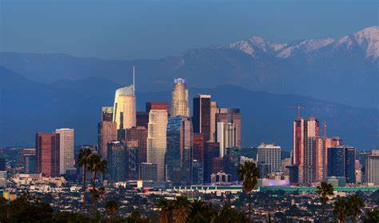

Culture
North America

There is lots of Indigenous Culture, Their art, languages, spirituality and connection to the land shape the continent's identity
There is a lot of European Influence in North America. European colonization brought diverse cultural elements to North America.
English, French and Spanish Languages, Christianity and architectural styles left lasting impacts.
North Americans are very passionate aboout sports with sports like Baseball, American Football, Basketball and ice hockey which are major pastimes.